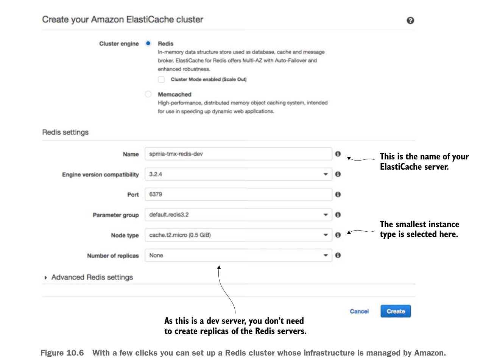

- Để bắt đầu, quay lại trang chính của AWS Console (nhấp vào khối màu cam ở góc trên bên trái trang) rồi nhấp vào liên kết ElastiCache.
- Từ bảng điều khiển ElastiCache, chọn liên kết Redis (bên trái màn hình), sau đó nhấn nút Create màu xanh ở đầu màn hình. Thao tác này sẽ mở trình hướng dẫn tạo ElastiCache/Redis.
Hình 10.6 cho thấy màn hình tạo Redis.

Đây là tên của máy chủ ElastiCache của bạn.
Loại instance nhỏ nhất được chọn tại đây.
Vì đây là máy chủ dev, bạn không cần tạo bản sao (replica) của các máy chủ Redis.
Chỉ với vài cú nhấp chuột, bạn có thể thiết lập cụm Redis có hạ tầng được Amazon quản lý.
Hãy nhấn nút create sau khi bạn đã điền đầy đủ dữ liệu. Amazon sẽ bắt đầu quá trình tạo cụm Redis (quá trình này sẽ mất vài phút). Amazon sẽ xây dựng máy chủ Redis một nút chạy trên instance máy chủ Amazon nhỏ nhất hiện có. Sau khi nhấn nút, bạn sẽ thấy cụm Redis đang được tạo. Khi cụm đã được tạo, bạn có thể nhấp vào tên cụm và trình duyệt sẽ đưa bạn đến